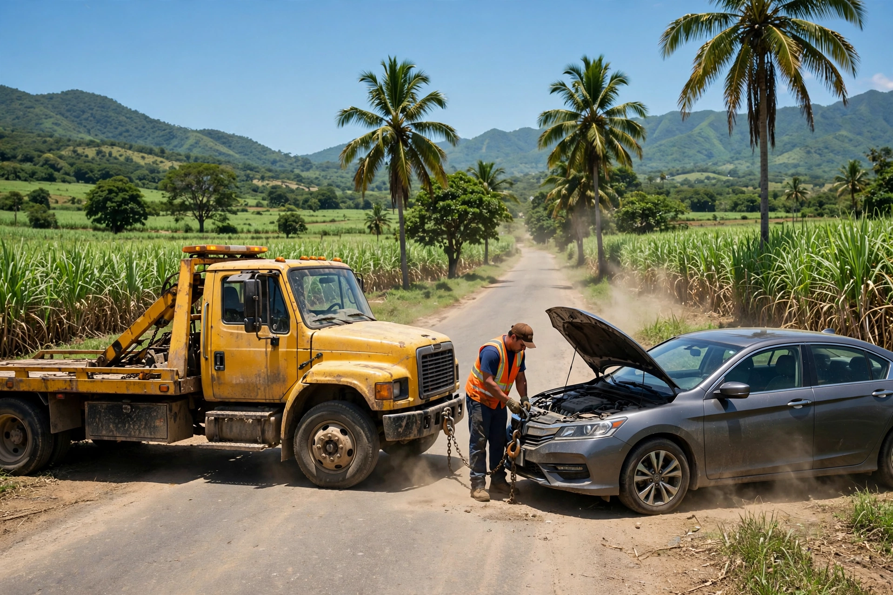
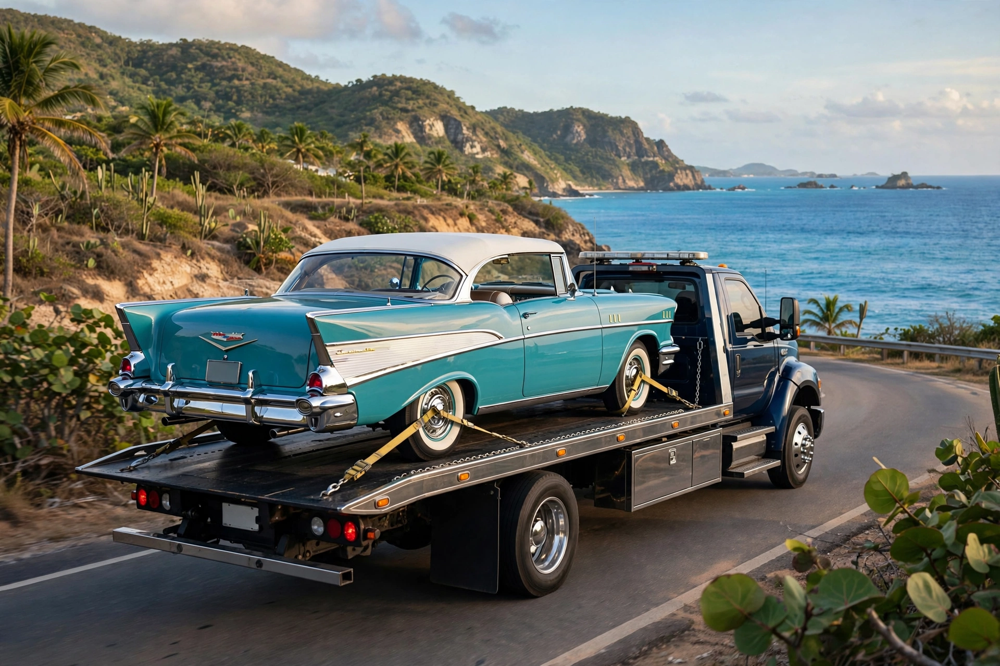

Salinas · Puerto Rico
Grúa 24 horas en Salinas y el área sur. Remolque y asistencia en carretera con trato de primera.
Atardecer en el sur · siempre en ruta
En el terreno


Servicios
Llevamos tu vehículo a donde necesites, a cualquier hora del día o la noche.
Cambio de goma, paso de corriente y asistencia rápida en el lugar.
Si te quedas varado en la rural o la autopista, vamos a buscarte.
Transporte con plataforma y cuidado extra para tu clásico.
Fácil
Dinos dónde estás y qué le pasa a tu vehículo.
Remolque o asistencia en el lugar, con trato de primera.
Zona de servicio
Base en Salinas con cobertura en el área sur de Puerto Rico. Llámanos con tu ubicación y te confirmamos el tiempo de llegada.
Dudas comunes
Sí. Atendemos las 24 horas en Salinas y el área sur: de madrugada, fines de semana y feriados.
Remolque, cambio de goma, paso de corriente y rescate si te quedas varado. Lo coordinamos por teléfono.
Sí. Usamos plataforma para que tu clásico viaje seguro, sin arrastre.
Sí, cubrimos el área sur. Llámanos con tu ubicación y confirmamos.
Tu ubicación, el tipo de vehículo y qué pasó. Con eso salimos hacia ti.
Esta página la creó ManuPro. Escríbenos hoy mismo y cotiza la website profesional de tu negocio.
Cotizar por WhatsApp